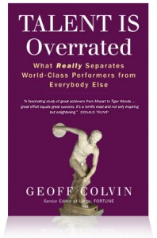

Cult? AJATT. AJATT? Writing. Writing? Books. Books? Book review!
Today’s book review is about, pertains to and is brought to you buy Geoff Colvin’s ultra magnum opus, and underrated book about how Talent is Overrated. I don’t know if this book is actually underrated in the literal sense of the word, what I mean is that it’s not nearly as widely known and celebrated as it deserves to be.
This book, like Bill Burr and Ben Stiller, deserves to be a household name. Remember how big 7 Habits was when we were kids? And how everyone owned and quoted it, but neither read nor applied it? This book should be that, except read and applied.
So today, children, watch and read, as I, Khatzumoto, sing unto thee the praises of this…this tome among tomes.
Let mortal book reviewing begin!
Title/Author/Info |
||
| 
Talent Is Overrated: What Really Separates World-Class Performers from the Rest of Us
Good thing he’s not an editor-at-small, eh, lads? Eh? Knee. Slap. Where do I come up with these? |
||
Pros |
Cons |
|
|
|
|
Comments |
||
OriginsLike many (all?) great things, this book started small. It was originally an article in Fortune magazine that seems to have more or less organically expanded into an entire book. It still retains the wonderful readability of an article, but combines it with the depth and breadth of a book. It’s just good effin’ writing, people. Gems, Gems, EverywhereThis book is full of gems. As I hinted at earlier, I read this book both before the Janslation (Japanese translation) came out and before I had 「developed」/hacked together the Unified Reading Process, so my copy was underlined to kingdom come. Kingdom actually came, and they were like: 「wow…that’s a pretty heavily underlined book. Is…is this a bad time?」, and I was like 「No, Kingdom, you can come, just…leave the book」, and they were like… OK, I digress. Where were we? Oh yeah – this book is full of gems, some of which I found quite moving, actually. Rather than listen to me ramble on and on here, we’d better just let Geoff speak for himself [bold type added by me]:
Khatzlation: don’t complain about 「not being smart enough」. In truth, we don’t even know what 「smart」 is.
Khatzlation: You don’t quit practicing because you suck, you suck because you quit practicing. You don’t play because you’re good. You’re good because you play. You don’t run because you’re good at running, you’re good at running because you run.
Khatzlation: Didja hear that, SRS fans?
Khatzlation: Yeah, but he was a big, black man. They’re born that way, you know. Big,strong, runners. Kind of like deer.
Khatzlation: Hear that, intermediate slumpers? Chill. You’re getting better, you just can’t see it. On Autodidactism
*Cough* SRS. *Cough* Sentences. *Cough* cloze deletions. *Splutter*.
On SRSIt’s unforuntate that Colvin hasn’t heard of SRS, because if he had, he’d see it for what it is and recommend it profusely. SRS is one of the most powerful training tools ever invented, perfect for the type of deliberate practice he describes in places like page 114:
That there is exactly the kind of thing that SRS can handle for you, all the time, and with potentially half the review load, to boot.
Best reason to SRS personal development books I have ever heard. On Jerry RiceAgain, Talent is Overrated appears to be the first book written by a WASP male in the last 300~500 years to discuss African-American athletes as if they were human beings. I’m being facetious, but only slightly so. Colvin devotes 4 pages – that’s about 2% of the book, kids – to discussing Jerry Rice’s work ethic and the details of his self-made training program. Not once, not once, does Colvin even attempt to give Rice the Big Black Magical Negro Man-Beast treatment. Maxwell Maltz himself, in all his greatness, couldn’t entirely see past magical blackness. This, folks, is history. If I were a chick, I’d be having Geoff Colvin’s illegitimate children right now. In fact, if you’re a chick and looking for something to do today, then stop reading this, board a motor vehicle, report to Geoff Colvin’s residence immediately, and start having children out of wedlock with him. Yeah…it’s that good. On Bullet Points and Bold TypePerhaps Japanese people have bullet points in their business books for the same reason that there are very silly, slapstick moments in even the most serious of anime: Japanese people aren’t as concerned with being serious; they’re not afraid that helping readers out will be misconstrued as condescension. Or not…I could just be orientalizing. In fact, I know I’m orientalizing; I just made all that up because it sounded cool; I don’t actually think there’s a common cause behind these two phenomena (textual relief through formatting und comic relief in anime), although it is kind of cool to pretend that there is…makes you feel all deep and quasi-scientific and insightful and stuff. Hehe. Softcover LoveI have the softcover edition. I’m just sayin’, dawg: hardcover books smack of arrogance to me. 「Look at me, my words are so important that they have to be heavy , too!」. I’m trying to carry books around here, chief – not lift weights. |
||
I found a quote that made me think of you, in that I knew it would totally annoy you:
“Learning is not child’s play; we cannot learn without pain” -Aristotle
See? Even long dead people can be really wrong. 😀
Anyway, that’s not related at all to the above post, so…that seems like a cool book! If only I was literate in Japanese and wasn’t pretending to be illiterate in English.
Hey, just a quick note, there is indeed a Kindle edition: www.amazon.com/Talent-Is-Overrated-ebook/dp/B001HD8NZ8/ I know because I read it when it first came out, and there’s no way I paid the king’s ransom it takes to get new English non-fiction in Shanghai, so it must have been on a Kindle. 🙂